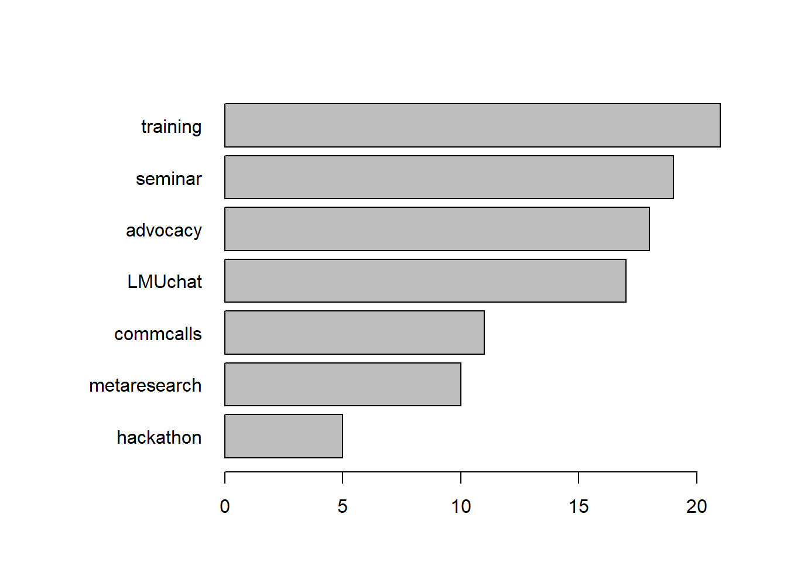
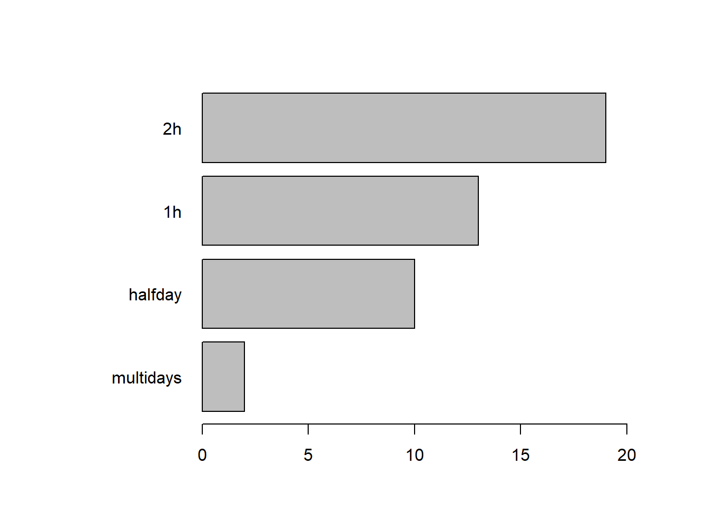
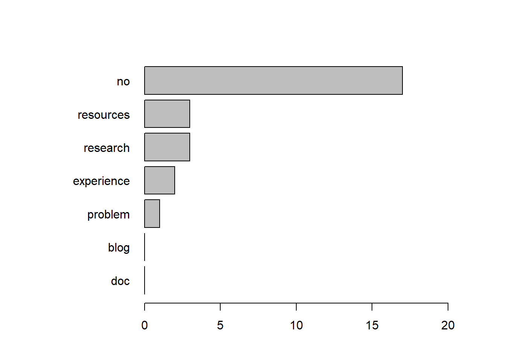

OSIP survey results 26.07.2022
Descriptive statistics
Number of sign up to mailing list since first advertisement fo the survey on the psychology department mailing list (12.07.2022): 5
Total number of subscribers to the OSIP mailing list: 47
Total number of participant in the OSIP survey: 24
Survey Resuts
Participants
other PhD PI Postdoc
3 10 1 10 Other
Associate Professor M.Sc. student Student (BA)
1 1 1 Activities
‘What do you expect from the OSIP community?’

Other activities
< table of extent 0 >Topics
‘Which topics would you be interested to hear about in talks/workshops/seminars?’
Other topics
< table of extent 0 >Duration
‘What length of OSIP events (e.g., workshops) would you consider joining?’

Participation
‘In what way would you prefer to participate in the OSIP community?’
Other participation
< table of extent 0 >Contributions
‘Do you have resources/perspectives you would like to contribute?’

Other contributions
R Tutorial for beginners
1 Hopes
‘Do you have any specific hopes for the OSIP community? What would be valuable for you?’
[1] "It would be great to have some kind of tutoring program in which a person experienced with open research helps a novice (few prior experience with open research) to publish the first open research project, e.g., with open data, open material etc. "
[2] "keep going pretty much as this was"
[3] "making OS the standard."
[4] "Active communication and exchange"
[5] "networking and flow of information"
[6] "common OS problems and how to solve them"
[7] "Creating products, solutions, actionable knowledge"
[8] "At this point, I think workshops providing practical guidance related to open science would be the most useful. "
[9] "Inform, Teach, Create a mindset "
[10] "Staying up to date what ideas, research, practical applications move the Open Science Community" Inclusion
‘What would help you feel comfortable contributing? (e..g, language, online vs. in-person events, synchronous vs asynchronous contributions)’
[1] " I prefer hybrid, synchronous events. This suits best to the current times and makes it really easy to participate."
[2] "online events"
[3] "I feel comfortable."
[4] "online or inperson events"
[5] "German preferred; Online-Events"
[6] "I would like to discuss topics among \"peers\" rather than hearing from \"experts\" or presenting as an \"expert\"."
[7] "If it is applied (no geberal this is os this is whx it is important events)"
[8] "Online courses via Zoom"
[9] "Currently I would be the most comfortable contributing by answering questions in an online chat format, but as I acquire more experience I would also be open to contributing by leading online workshops."
[10] "I think a mixture of all of this would be fine"
[11] "not too preparation intensive contributions "
[12] "if the main language would be german" Subscription
‘Are you currently subscribed to the OSIP mailing list or wish to be?’
not yet yes
2 22
Comments
‘Do you have any other comments?’